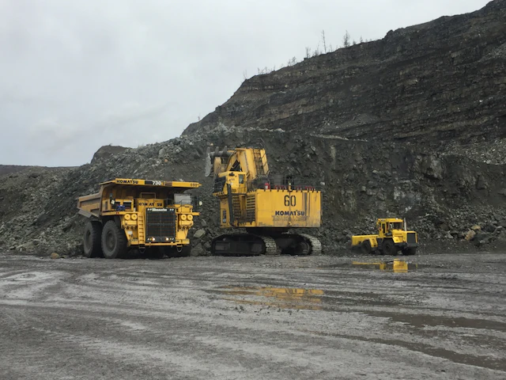

Mining Operations Overview
Open-Pit Coal Mining, Done Methodically
Operasi tambang terbuka dimulai dari pembukaan lahan, pengupasan overburden, hingga batu bara siap diangkut ke stockpile.
Setiap tahap saling bergantung. Karena itu kami menjaga koordinasi antara perencanaan, alat, operator, dan pengawas agar target harian tercapai tanpa mengorbankan keselamatan.

Coal Getting Process
Five Stages From Land to Stockpile
Alur umum penambangan batu bara terbuka. Sesuaikan tahapan dengan lingkup kontrak perusahaan.
- STEP 01
Land Clearing
Pembersihan lahan dan pengamanan topsoil untuk reklamasi.
- STEP 02
Overburden Removal
Pengupasan tanah penutup hingga lapisan batu bara terbuka.
- STEP 03
Coal Getting
Penggalian selektif dan pemuatan batu bara ke unit angkut.
- STEP 04
Coal Hauling
Pengangkutan menuju ROM stockpile atau pelabuhan.
- STEP 05
Stockpile & Reclamation
Penimbunan, pengiriman, dan pemulihan lahan pascatambang.

Excavator Loading Activities
Efficient, Safe Loading at the Face
Pemuatan adalah titik temu antara penggalian dan pengangkutan. Ritme yang tepat menentukan produktivitas seluruh siklus.
- Penempatan excavator pada jenjang yang stabil dan rata
- Spotting dump truck sesuai arahan operator excavator
- Jumlah bucket disesuaikan kapasitas unit angkut
- Komunikasi radio dan rambu yang jelas di area muat
- Inspeksi unit sebelum dan sesudah shift
Coal Hauling Process
A Controlled Haul Cycle
Setiap ritase mengikuti siklus yang sama dan dipantau untuk menjaga aliran batu bara tetap lancar.
Loading point
Dump truck dimuat batu bara di front tambang.
Loaded haul
Unit bergerak di jalan tambang dengan batas kecepatan dan jarak aman.
Dumping at ROM
Batu bara ditumpahkan di ROM stockpile sesuai arahan pengawas.
Empty return
Unit kembali ke front muat dan ritase dicatat.

Mining Site Gallery
Life on a Coal Mining Site
Pilih foto untuk memperbesar. Seluruh foto adalah ilustrasi, bukan dokumentasi site perusahaan.
Operations Partner
Planning a coal getting project?
Kami siap mendiskusikan metode kerja, armada, dan jadwal operasional bersama Anda.